1. Ichika

- Desde pequena, ela sempre foi fã da Hatsune
- Ela é a guitarrista da banda
- Ela ainda acredita no Papai Noel
- Ela tem uma habilidade secreta que pratica como um hobbie: descascar maçãs em uma tira sem quebrá-la
- Uma vez, ela passou uma tarde inteira aperfeiçoando um riff de guitarra inspirado em um vídeo de show da Miku que ela assistia obsessivamente.
- Além de cuidar de seus cactos, ela é muito conhecedora de flores e seus significados
- Ela não tem conhecimento de quais músicas são consideradas "populares" ou modernas, pois ela só ouve músicas relacionadas à Miku
- Ela está em uma comunidade online dedicada a pães de yakisoba (eu nem sabia que isso existia)
2. Saki
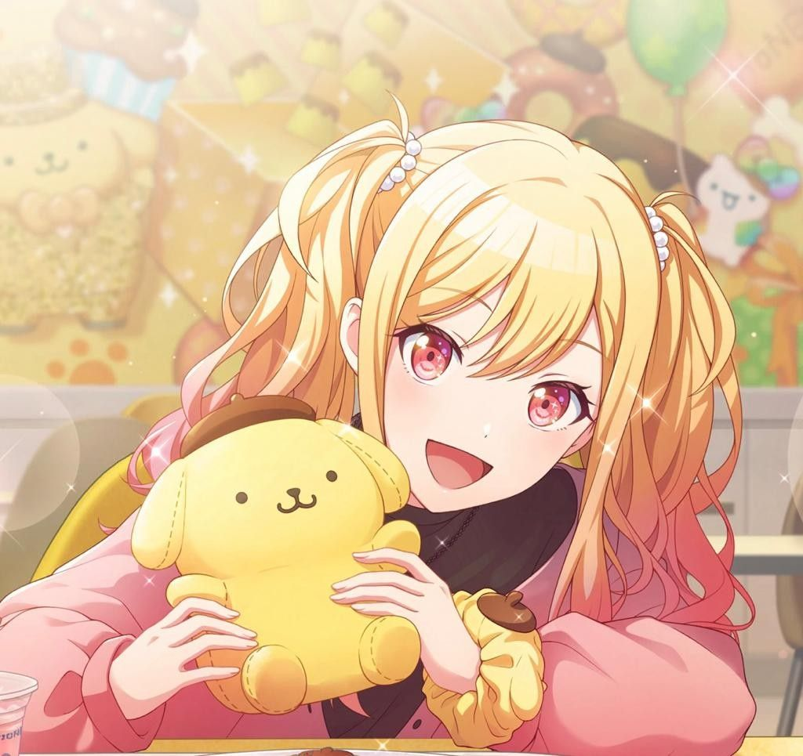
- Saki aprendeu a fazer malabarismos enquanto estava no hospital
- De acordo com o calendário escolar japonês, ela é a integrante mais velha do Leo/Need
- O lugar favorito dela no School Sekai é o terraço
- Ela não sabia nadar até que Honami a ensinou no evento "Let's Have the Absolute Best Summer!"
- Foi ela quem sugeriu o nome da banda "Leo/need", inspirado na chuva de meteoros Leônidas que eles observaram quando crianças.
- Ela tem o hábito de fazer acessórios e joias de miçangas para suas amigas do grupo
- Ela é irmã do Tsukasa e a mãe deles é uma professora de piano
- Ela compartilha seu teclado com a Kagamine Rin(VOCALOID)
3. Honami
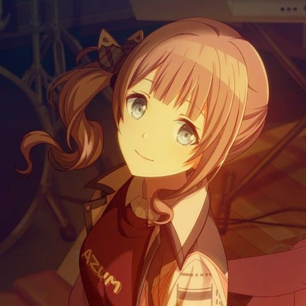
- Ela compartilha sua bateria com a MEIKO
- Ela fazia trabalho voluntário num lar de idosos quando era mais jovem
- Ela é a integrante mais forte e atlética do Leo/need
- Ela foi a última intregante a se juntar ao Leo/need
- Ela tem medo de desenhar porque acredita ser muito ruim nisso, algo mostrado em uma de suas cartas
- Ela faz parte do comitê de embelezamento, junto com Shizuku
- Ela tem um irmão mais novo que já foi mostrado em uma carta dela
4. Shiho
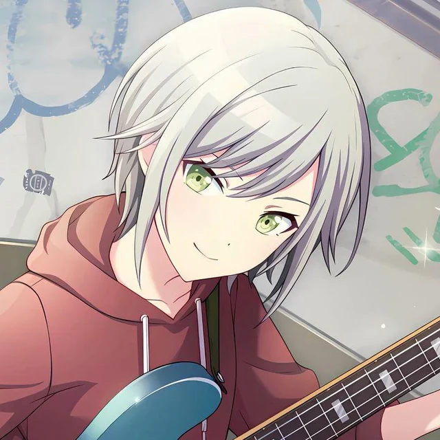
- Ela joga um jogo de criação de animais de estimação no celular, embora às vezes fique envergonhada por isso, provavelmente por contrariar sua personalidade mais fechada
- Quando os apresentadores e jornalistas dizem olá, ela acena de volta para ele
- De acordo com o calendário escolar japonês, ela é a integrante mais nova de seu grupo, com provavelmente 16 anos
- Assim como a Shiho, a sua dubladora também sabe tocar baixo
- Ela é uma grande fã de Phenny (mascote do Phoenix Wonderland) e coleciona ativamente produtos relacionados a ele, ficando frustada por não conseguir comprar uma pelúcia de edição limitada por ter que ir para a escola
- Ela ama animais fofos, fazendo parte do comitê de cuidados ao animais
5. Minori
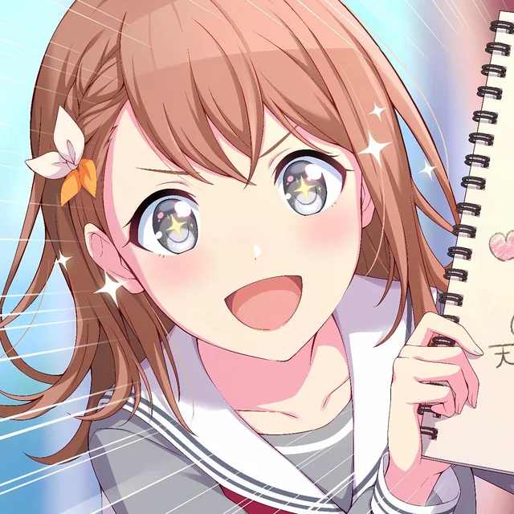
- Além de ser fã da Haruka, ela é muito conhecedora da cultura idol em geral
- Ela não gosta de ir em brinquedos radicais, algo mostrado na história "Time to hang out♪" na carta da An do mesmo evento
- Ela é a aluna mais velha do segundo ano
- Ela tem um Samoieda de estimação que ela chama de Samo-chan
- Ela tem um irmão mais novo que não foi mostrado no jogo
- Ela falhou em mais ou menos 50 audições para idol
6. Haruka
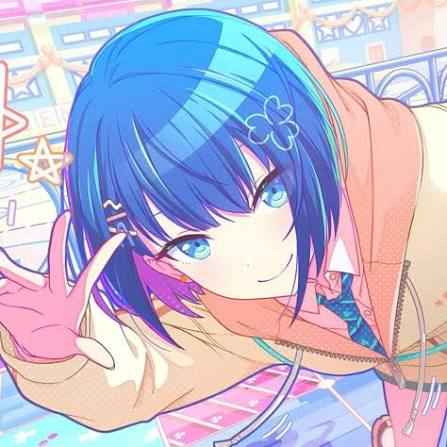
7. Airi
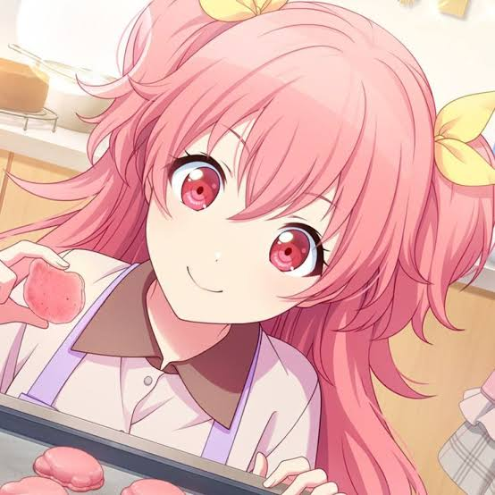
8. Shizuku
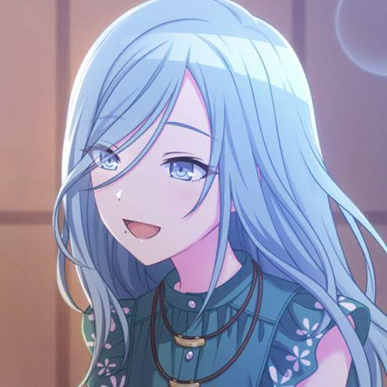
9. Kohane
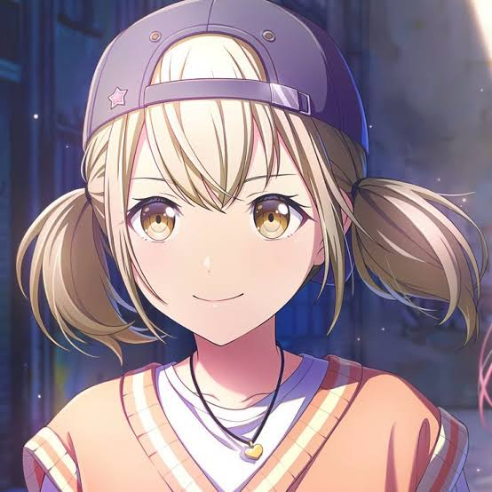
- Ela é frequentemente comparada com um hamster, por sua personalidade e aparência
- Ela ama pessêgos, somente pelo fato de serem bonitos e não pelo gosto
- Ela é uma grande fã do Phoenix Wonderland
- Complementando a curiosidade anterior, ela já chegou a aparecer em uma animação do Wonderland x Showtime, na plateia assistindo o show
- Por frenquentar muito o parque, o elenco já a reconhece
- Ela tem uma cobra branca chamada Count Pearl que já apareceu em cartas dela
10. An
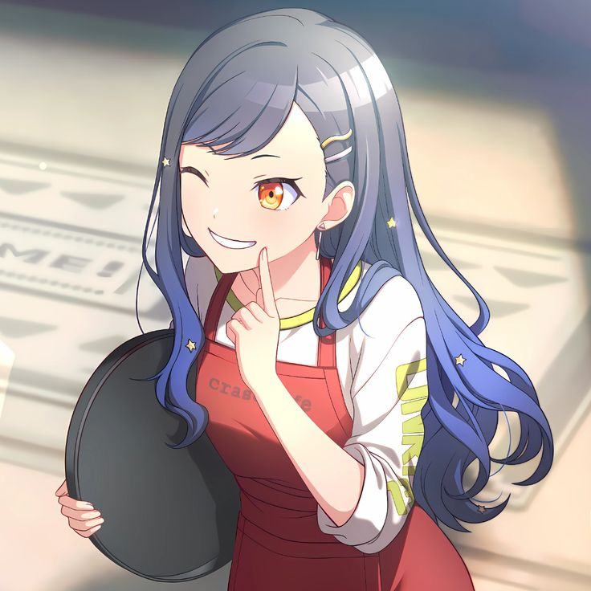
- Continuando com a curiosidade 1 da Kohane, a An tem uma pasta de fotos de hamster com o nome "Kohane🐹" que tem pelo menos 100 fotos de hamster
- A comida que ela menos gosta é tomate
- Apesar dela ter dificultades em aprender inglês, sua dubladora é fluente no idioma
- Ela começou a gostar de sorvete de passas ao rum porque considerava uma comida "muita adulta" para uma criança
- Ela é uma das poucas personagens que tem o nome de ambos os pais revelados, Ken Shiraishi e Yuka Shiraishi
- Seu pai era um artista de rua em Shibuya
11. Akito
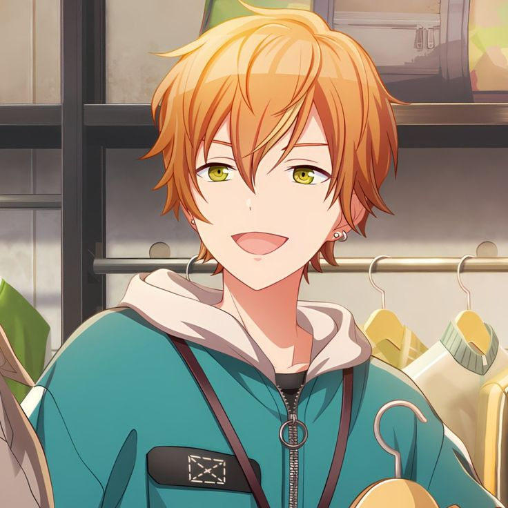
12. Toya
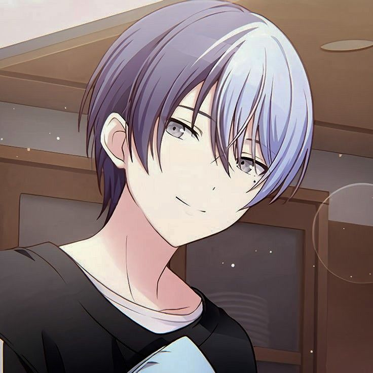
13. Tsukasa
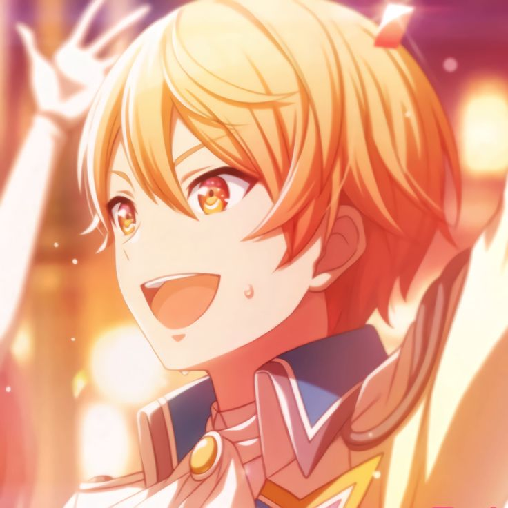
14. Emu
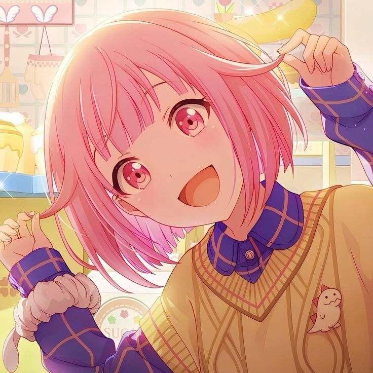
- Ela é uma das únicas personagens que consegue ver fantasmas, junto com a Mafuyu e Shizuku
- Ela é a personagem mais rica entre os personagens jogáveis
- Ela é a personagem mais baixa do jogo
- Ela é filha do dono de um parque de diversões: Phoenix Wonderland
- Ela tem uma audição muito boa
- Seu traje casual é uma versão modificada do uniforme da Phoenix Wonderland
- Foi ela quem sugeriu o nome do seu grupo (Wonderland × Showtime)
- Ela é academicamente e emocionalmente inteligente, conseguindo indentificar o sorriso falsa da Mafuyu
- Continuando no assunto do sorriso Mafuyu, o sorriso falso da Mafuyu dá medo na Emu
- Ela é muito atlética e é capaz de pular de dois andares sem se machucar, bem como pular sobre Tsukasa enquanto ele está de pé
15. Nene
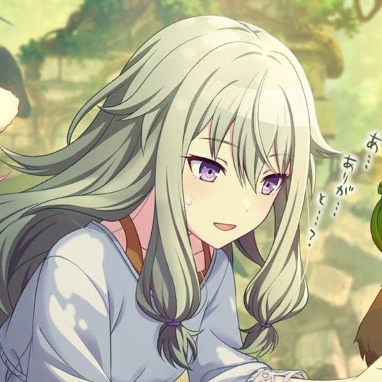
16. Rui
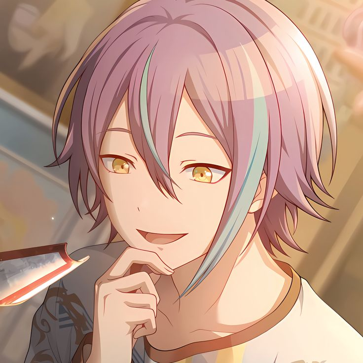
- Ele é o personagem mais alto do jogo, tendo 1,82 metros
- Ele ODEIA legumes, vegetais e frutas que têm textura parecida com vegetais, como melância
- Ele ama robótica e já criou diiversos robôs, como a nene-robo, feita para auxiliar os shows do seu grupo
- Seu quarto é muito bagunçado e diferente dos demais quartos, pois serve como uma oficina dele e ele não gosta de limpar
- Seu quarto antigamente era uma garagem
- A mãe dele é biologa e o pai dele é um engenheiro robótico, o que influenciou um pouco o seu amor por criação de robôs
- Ele é o diretor do Wonderland x Showtime
- Seu elemento/emoji representativo é o balão, porque um dos hobbies dele é a arte de balão
- É o personagem que tem mais polêmicas em seus eventos, como uma música removida, evento cancelado no servidor global e MV removido
17. Kanade
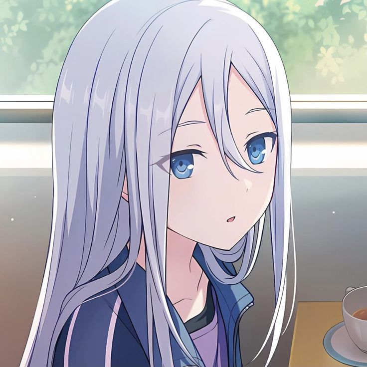
18. Mafuyu
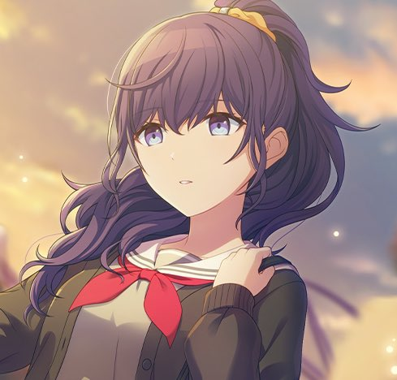
19. Ena
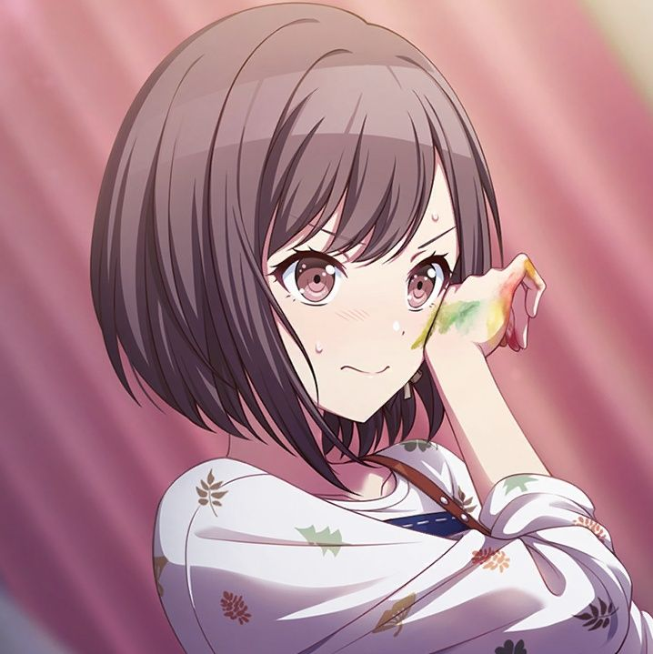
- Ela já empurrou seu pai em um lago quando criança
20. Mizuki
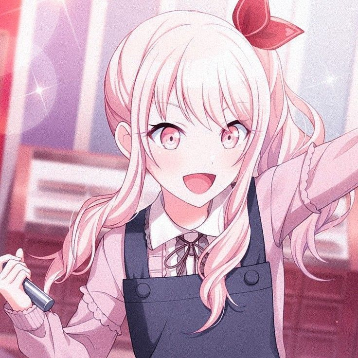
- A roupa da nene-robo e de alguns figurinos do WxS foram feitas por ela